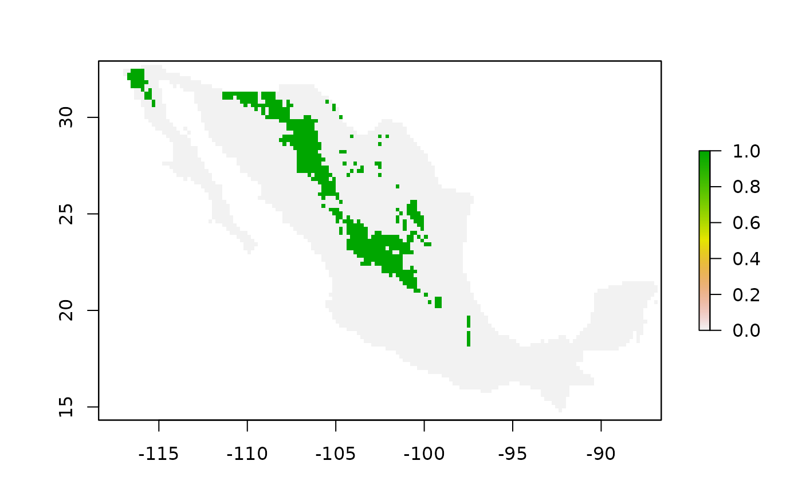

model2sparse: Converts a niche model into a diagonal sparse matrix
Source:R/model2sparse.R
model2sparse.Rdmodel2sparse: Converts a niche model into a diagonal sparse matrix
Value
An object of class setA. The niche model
is stored as diagonal sparse matrix (slot sparse_model).
Details
threshold parameter represents the suitability value used to convert continuous model into a binary model.
Examples
model_path <- system.file("extdata/Lepus_californicus_cont.tif",
package = "bamm")
model <- raster::raster(model_path)
sparse_mod <- bamm::model2sparse(model, threshold=0.75)
print(sparse_mod)
#> Set A of the BAM digram it contains 8 slots
#>
#> @niche_model: a niche model:
#>
#> class : RasterLayer
#> dimensions : 91, 159, 14469 (nrow, ncol, ncell)
#> resolution : 0.2, 0.2 (x, y)
#> extent : -118.4042, -86.60417, 14.51846, 32.71846 (xmin, xmax, ymin, ymax)
#> crs : +proj=longlat +datum=WGS84 +no_defs
#> source : memory
#> names : layer
#> values : 0, 1 (min, max)
#>
#> @suit_threshold: Threshold value used to binarize model@cellIDs: ids of the cells that have values (4281 pixels)
#>
#> @suit_values: Suitability values of the continuous model
#>
#> @sparse_model: A sparse square matrix of 4281 x 4281 entries
#>
#> @coordinates: Pixel centroid coordinates of the model
#>
raster::plot(sparse_mod@niche_model)
